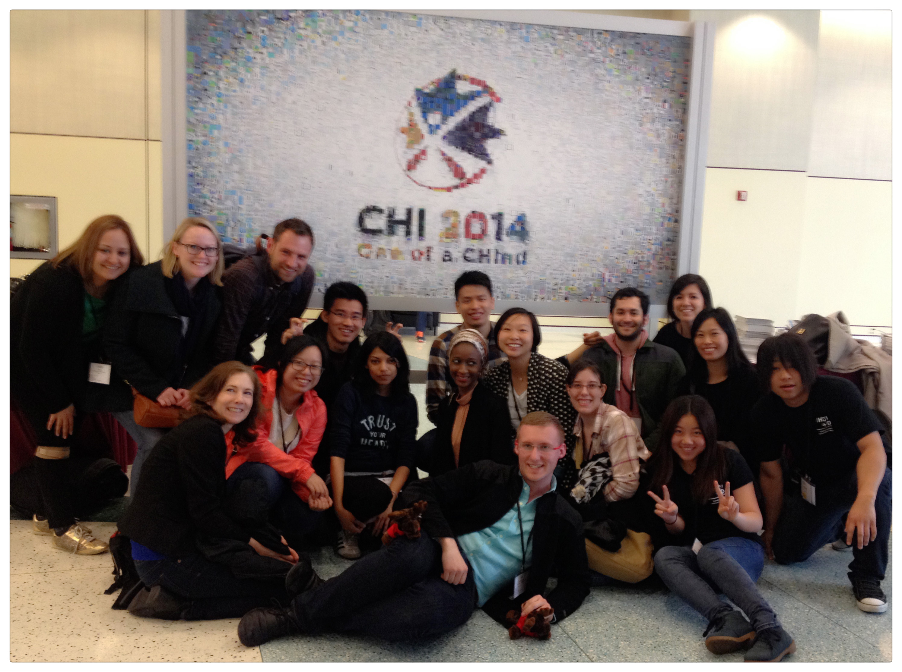

The past experience in cognitive, social and engineering psychology researches, inspired my passion of human behavior and strengthened my research skills. While the study in MHCID and the life in Seattle, deepen my love of UX and sharpen my design qualities and skills.
Design for people's better life and unpredictable future, help those in need and make contributions to the society, it is my passion and my experience, and my future.
Volunteering in UX events hosted by IxDA Seattle, and China Interaction Design Experience Week, made me lucky enough to meet with my UX idols. As the co-founder of Chinese UX Association in US, establishing our UX family and fight hard for UX Unicorn together, become part of my life.
Thank God, I am a UXer!
MHCID@CHI 2014
Find me in Seattle!
Call me at (206)-295-0500
Email me at weizhuxiaona@gmail.com
Know more about me and my passion of UX? Read my blogs at Medium!
"Design is rendering the intent, and Innovation is adding new values." -- Jared Spool
"Follow your heart, and do what you love." -- Steve Jobs
Volunteer in IxDA and IxDC